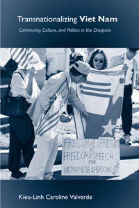

<body bgcolor="#FFFFFF" text="#000000" link="#0000FF" vlink="#CC0000" alink="#CC0000"><center><hr width="350" size="1" align="center" noshade>Tracing the ties that connect diasporic Vietnamese to each other and to their homeland<hr width="350" size="1" align="center" noshade><p><a href="https://cdcshoppingcart.uchicago.edu/Cart/ChicagoBook.aspx?ISBN=9781439906798&&PRESS=temple" target="_top">Buy this book!</a> | <a href="https://cdcshoppingcart.uchicago.edu/Cart/Cart.aspx?PRESS=temple" target="_top">View Cart</a> | <a href="https://cdcshoppingcart.uchicago.edu/Cart/Cart.aspx?PRESS=temple" target="_top">Check Out</a></p><p></p></center><!--none//--><h1>Transnationalizing Viet Nam</h1>
<H2>Community, Culture, and Politics in the Diaspora</H2>
<h3>Kieu-Linh Caroline Valverde</h3>
<P>cloth 1-4399-0679-3 $75.50, Oct 12, <FONT COLOR=#990033>Available</FONT>
<br>paper 1-4399-0680-7 $27.95, Oct 12, <FONT COLOR=#990033>Available</FONT>
<br>Electronic Book 1-4399-0681-5 $27.95 <FONT COLOR=#990033>Available</FONT>
<BR> 198 pp
6x9
</P><BLOCKQUOTE><I>"Bridging Asian Studies and Asian American Studies, </I>Transnationalizing Viet Nam<I> is a rich and nuanced study of transnational linkages between Viet Nam and its diaspora in the United States. Through fascinating case studies of Vietnamese popular music productions, Internet virtual communities, diasporic art and community politics, Kieu-Linh Caroline Valverde provides a rare glimpse into how Vietnamese have connected their worlds and made meanings for themselves." </I><br>&#151<b>Yen Le Espiritu</b>, Professor of Ethnic Studies, University of California, San Diego</I></BLOCKQUOTE>
<P>Vietnamese diasporic relations affect&#8212;and are directly affected by&#8212;events in Viet Nam. In <i>Transnationalizing Viet Nam</i>, Kieu-Linh Caroline Valverde explores these connections, providing a nuanced understanding of this globalized community. Valverde draws on 250 interviews and almost two decades of research to show the complex relationship between Vietnamese in the diaspora and those back at the homeland.
<P>Arguing that Vietnamese immigrant lives are inherently transnational, she shows how their acts form virtual communities via the Internet, organize social movements, exchange music and create art, find political representation, and even dissent. Valverde also exposes how generational, gender, class, and political tensions threaten to divide the ethnic community.
<P><i>Transnationalizing Viet Nam</i> paints a vivid picture of the complex political and personal allegiances that exist within Vietnamese America and shape the relations between this heterogeneous community and its country of origin.
<BR>&nbsp;<h2>Excerpt</h2><P>Excerpt available at <a href="http://www.temple.edu/tempress">www.temple.edu/tempress</a></p>
<BR>&nbsp;<h2>Reviews</h2>
<p><I>"</I>Transnationalizing Viet Nam<I> greatly broadens our understanding of diasporic networks, transnationalism, and the Vietnamese diaspora. Valverde uniquely documents, over two decades, the tentative relationship between Vietnamese in the diaspora and those located in the homeland. She paints a vivid picture of the complex political landscape that influences diasporic members� personal decisions and convincingly demonstrates that scholarship on �the immigrant experience� and racial and/or ethnic identity must always take into account both the immigrants� memories and present conceptions of both their �homeland� and their homeland�s culture in relation to their perceptions of and actual experiences in the �host� country."</I><br>&#151<b>Emily Noelle Ignacio</b>, author of <i>Building Diaspora</i>; past Chair of the American Sociological Association�s Section on Racial and Ethnic Minorities; and Associate Professor of Sociology, University of Washington, Tacoma
<p><i>"The book offers the first 'insider' perspective that grapples candidly with Vietnamese American community formations, particularly its anticommunist politics. It serves as an invaluable resource for students and researchers interested in understanding the Vietnamese American community, but also offers a model that adeptly bridges Area Studies research with Asian American Studies through the framework of transnationalism.... [A]n important foundation for the study of Vietnamese diaspora."</i> <br>&#151<b><i>Amerasia</i></b>
<p><i>"[A] welcome addition to the limited literature on the Vietnamese-American experience by insiders in the refugee community.... </i>Transnationalizing Viet Nam<i> fill[s] an essential gap in the Vietnamese-American literature with regard to politics...it will be a valuable addition to the bookshelf of scholars pursuing research on transnationalism, refugees and community studies, as well as those simply interested in learning more about the complicated dynamics of the Vietnamese diaspora."</i> <br>&#151<b><i>Journal of Ethnic and Migration Studies</i></b>
<p><i>"This important book explores connections between Viet Nam and its overseas U.S. population from 1975 to 2012 by way of four case studies.... The strength of [the book] is its analysis of multiple and divergent facets of transnational life.... Perhaps what is most significant about </i>Transnationalizing Viet Nam<i> is not only that it is the first book-length study of anticommunism within the Vietnamese American community but the twenty years of research Valverde undertook to realize it... The book is elegantly written and argued with great aplomb, and it would be valuable for scholars, graduate students, and undergraduates interested not only in the broader areas but in art and cultural politics, community and municipal politics, technology and virtual communities, and identity in cross-border context."</i> <br>&#151<b><i>The Journal of Asian Studies</i></b>
<p><i>"Kieu-Linh Caroline Valverde is the foremost scholar of mixed-race issues insofar as they affect Vietnamese Americans, and is one of the foremost scholars of Vietnamese American studies at large.... Her latest book, </i>Transnationalizing Viet Nam<i>, is excellent, though some may choose to find it controversial.... It is the best analysis we have had to date of Vietnamese American community politics, set in local context but also in the web of connections across the Pacific back to Viet Nam. Valverde is not neutral. She makes criticisms and takes sides, but she is well within her rights to do so, and she never abandons her scholarly duties. It is a fine book that will last on the shelf for a long time."</i> <br>&#151<b><i>Asian Studies Review</i></b>
<p><i>"The author's four major examples of transnationalism, each chronicled in a chapter, provide evidence of what she sees as positive cultural and informational flows between Vietnamese living in both nations and what she considers to be the disruptive and divisive role that anticommunist politics plays among Vietnamese Americans.... This book contributes to the growing scholarship about former Vietnamese refugees and their children, which has developed in the post-settlement period, especially since the early 21st century, when flows of refugees from Vietnam came to an end. It engages with recent discussions, particularly among Asian American scholars, about what Long Le calls the 'work of anticommunism' among Vietnamese Americans (e.g., Reed-Danahay). </i>Transnationalizing Vietnam<i> [sic] adds to scholarship on the politics of culture and identity among immigrants, by working against a monolithic view of ethnic 'communities.'... It is primarily in her discussions of popular music, the strongest parts of the book, that Valverde provides readers with a sense of what 'everyday' transnationalizing processes might look like."</i> <br>&#151<b><i>International Migration Review</i></b>
<p><i>"The ethnographic data gathered is indeed remarkable.... Valverde�s insider status allowed her to explore intimately Vietnamese community formation processes that outsiders typically cannot access.... [H]er critique of Vietnamese community politics [is] compelling... Another strength of the book is the ways in which Valverde makes visible the personal lives of Vietnamese Americans and their myriad efforts to establish transnational connections with those in the homeland at the same time that they try to rebuild and make sense of their new identities in the U.S. context.... [An] impressive study."</i> <br>&#151<b><i>Contemporary Sociology</i></b>
<p><i>"Valverde�s </i>Transnationalizing Viet Nam<i> is based on extensive field work.... [She] possesses insider access to the Vietnamese diasporic community, and has spent almost two decades immersed in field work in the United States, France, and Vietnam, conducting approximately 250 interviews.... [Her] book shows that the shared cognitive and emotional processes underlying assimilation influences individuals� sense of belonging, and they affect local and national politics."</i> <br>&#151<b><i>Contexts</i></b>
<p><i>[This book] is the result of twenty years' worth of ethnography and interviews that Valverde undertook in the United States and Vietnam both before and after normalization of relations between the two nation-states in 1995.... One of the most generative points emerging from Valverde's study is how politics, space, and culture in the Vietnamese diaspora overlap in shifting and uneven ways. [</i>Transnationalizing Viet Nam<i>] suggest[s] the value that Vietnam and Vietnamese American Studies have for larger theoretical questions regarding diaspora and transnationalism."</i> <br>&#151<b><i>Diaspora</i></b>
<BR>&nbsp;<h2>Contents</h2><P>
<p>Preface
<br>Acknowledgments
<br>1. Transnationalizing Viet Nam
<br>2. Popular Music: <i>Sounds of Home Resistance and Change</i>
<br>3. Social Transformations from Virtual Communities
<br>4. Defying and Redefining Vietnamese Diasporic Art and Media as Seen through Chau Huynh's Creations
<br>5. Whose Community Is It Anyway? <i>Overseas Vietnamese Negotiating Their Cultural and Political Identity: The Case of Vice-Mayor Madison Nguyen</i>
<br>6. Vietnamese Diaspora Revisited
<br>Notes
<br>References
<br>Index
</P><BR>&nbsp;<H2>About the Author(s)</H2>
<P><b>Kieu-Linh Caroline Valverde</b> is Associate Professor of Asian American Studies at the University of California, Davis. Learn more about her at: <a href="http://www.kieulinh.com/" target="_top">www.kieulinh.com</a>.</P>
<BR><H2>Subject Categories</H2>
<p><A HREF="/tempress/asian_amer.html" TARGET="_top">Asian American Studies</a>
<BR><A HREF="/tempress/asian.html" TARGET="_top">Asian Studies</a>
<BR><A HREF="/tempress/sociology.html" TARGET="_top">Sociology</a>
</p>
<BR><h2 class="inpageheading">In the series</H2>
<P><I><a href="http://www.temple.edu/tempress/asam_history.html" onMouseOver="window.status='Click for other books in this series!'; return true;" onMouseOut="window.status=''; return true;" target="_top">Asian American History and Culture</a></i>, edited by K. Scott Wong, Linda Trinh V�, and Cathy Schlund-Vials.
</p><p>Founded by Sucheng Chan in 1991, the <I>Asian American History and Culture</I>, series has sponsored innovative scholarship that has redefined, expanded, and advanced the field of Asian American studies while strengthening its links to related areas of scholarly inquiry and engaged critique. Like the field from which it emerged, the series remains rooted in the social sciences and humanities, encompassing multiple regions, formations, communities, and identities. Extending the vision of founding editor Sucheng Chan and emeriti editor Michael Omi and David Palumbo-Liu, series editors K. Scott Wong, Linda Trinh V�, and Cathy Schlund-Vials continue to develop a foundational collection that embodies a range of theoretical and methodological approaches to Asian American studies.</p>
<p align="center"><a href="https://cdcshoppingcart.uchicago.edu/Cart/ChicagoBook.aspx?ISBN=9781439906798&&PRESS=temple" target="_top">Buy this book!</a> | <a href="https://cdcshoppingcart.uchicago.edu/Cart/Cart.aspx?PRESS=temple" target="_top">View Cart</a> | <a href="https://cdcshoppingcart.uchicago.edu/Cart/Cart.aspx?PRESS=temple" target="_top">Check Out</a></p><p><font face="Arial" size="1"><a href="copyright.html" onMouseOver="window.status='Web Copyright Policy';return true;" onMouseOut="window.status=''" title="Web Copyright Policy">&copy;</a> 2016 <a href="http://www.temple.edu" target="new" onMouseOver="window.status='Link to Temple University home page';return true;" onMouseOut="window.status=''" title="Link to Temple University home page">Temple University</a>. All Rights Reserved. http://www.temple.edu/tempress/titles/2151_reg.html</font></p>